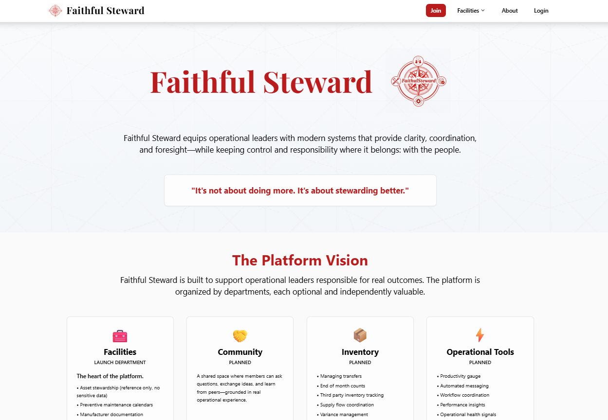
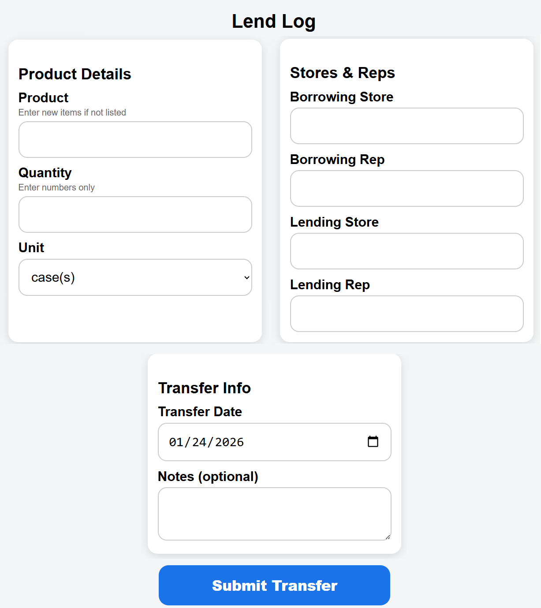
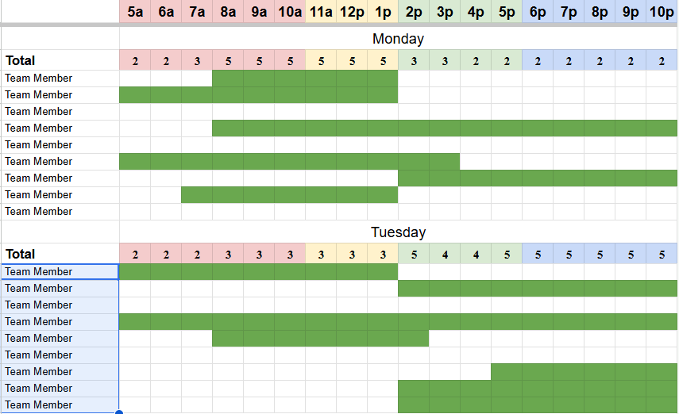
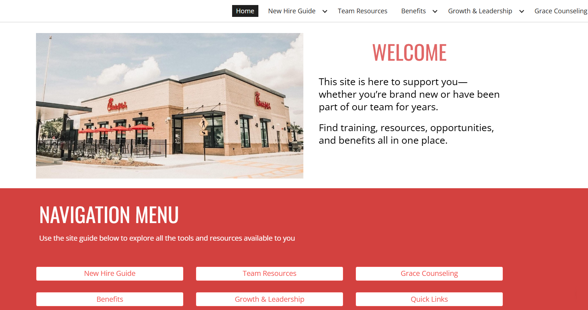

Operational software for real-world systems
Tech-Niche Services builds software that brings clarity to complex operations, coordination, and decision-making under pressure.
What I Build
Operational Systems
Workflow logic, dashboards, automation, visibility layers, and software that helps teams operate with clarity under real pressure.
Human Coordination Tools
Scheduling, accountability flows, escalation logic, and communication systems built for teams handling complexity at scale.
Interactive Products
State-driven interfaces, simulations, internal tools, and digital experiences designed around actual behavior and decision-making.
Modern Product Execution
I combine research, architecture, rapid iteration, and disciplined implementation to move from ambiguity to usable software without losing quality or focus.
Featured Projects

FaithfulSteward
Operational SaaS for Maintenance, Visibility & Stewardship

Complete Inventory System
Reconciliation, Inventory Logic & Operational Control

HR & Labor Management
Workforce Coordination, Forecasting & Visibility Systems

Interactive Platforms & Internal Tools
Knowledge Systems, Product Interfaces & Coordination Layers
Let's Build the Right System
From workforce tools and dashboards to platforms and simulations, I build systems people can use under real constraints.